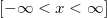
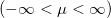
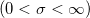

Landaucdf
Landaucdf-func
Description
Computes the cumulative density for the Landau distribution at x and with location parameter mu and scale parameter sigma.
Syntax
double landaucdf(double x, double mu, dboule sigma)
Parameters
x
- Input, the value of the variate 
mu
- Input, double. Location parameter of the Landau distribution .
sigma
- Input, double. Scale parameter of the Landau distribution .
Examples
- landaucdf(3, 1, 2) = 0.49652926200883